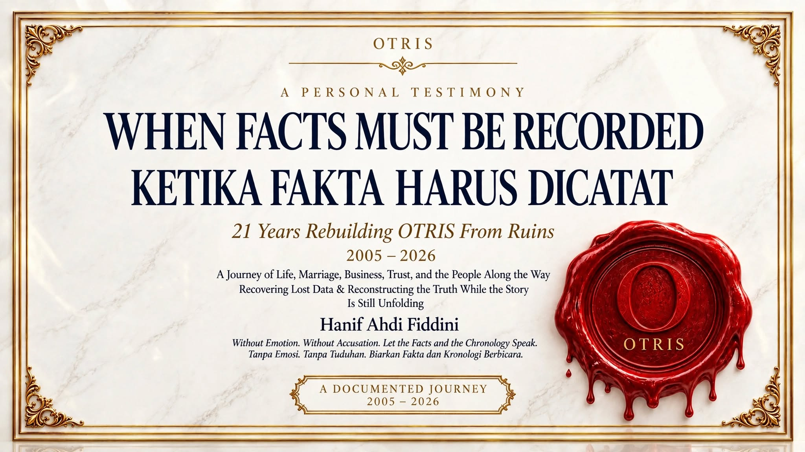

WHEN FACTS MUST BE RECORDED / KETIKA FAKTA HARUS DICATAT
21 Years Rebuilding OTRIS From Ruins 2005–2026 A Journey of Life, Marriage, Business, Trust, and the People Along the Way Recovering Lost Data & Reconstructing the Truth While the Story Is Still Unfolding

When Facts Must Be Recorded — Ketika Fakta Harus Dicatat
Oct 31, 2026 · @HANIF AHFI FIDDINI
Dua puluh satu tahun, dicatat bukan untuk menang, tetapi supaya tidak hilang.
Saya mulai menulis karena ingatan saya mulai dibantah
Selama bertahun-tahun hidup saya kelihatan baik-baik saja. Saya bekerja, pindah dari satu kota ke kota lain, menemui pelanggan, memperbaiki yang rusak, membangun hubungan, dan berusaha memenuhi apa yang dipercayakan kepada saya. Dari luar itu terlihat seperti cerita kerja keras yang berhasil.
Tetapi hidup tidak sesederhana laporan penjualan. Di belakang perjalanan sepanjang itu ada waktu yang tidak kembali, keputusan yang tidak selalu mudah, kepercayaan yang ternyata tidak abadi, dan keluarga yang ikut menanggung akibat pilihan-pilihan saya.
Ada pengabdian yang tidak pernah dihitung sebagai biaya. Ada pekerjaan yang selesai tanpa pernah tercatat siapa yang mengerjakannya. Dan ada hubungan yang bertahun-tahun saya kira akan baik-baik saja, sampai kepentingan kami berbeda dan semuanya harus dipahami ulang.
Titik baliknya sederhana: saya tidak lagi bisa menjelaskan hidup saya hanya dengan ingatan. Saya mulai membuka dokumen lama, mencari surat, membaca ulang percakapan, memeriksa transaksi, menyusun kronologi. Pelan-pelan saya sadar peristiwa-peristiwa yang dulu saya kira terpisah ternyata satu rangkaian.
Dari kebutuhan mencatat itulah naskah ini lahir. Ini bukan kisah orang yang selalu benar, dan saya tidak sedang mengatakan semua keputusan saya adalah keputusan terbaik. Saya hanya ingin melihat perjalanan ini secara utuh — termasuk bagian yang menyakitkan, membingungkan, dan sampai hari ini belum ada jawabannya.
Ketika ingatan mulai diperdebatkan, catatan adalah cara menjaga agar sebuah hidup tidak kehilangan konteksnya.
Kertas folio, penggaris, kalkulator
Perjalanan ini berawal dari pekerjaan yang dekat sekali dengan kebutuhan orang: alat laboratorium dan pelayanan kesehatan.
Waktu itu teknologi belum semudah sekarang. Memasarkan alat laboratorium bukan sekadar memperkenalkan produk. Saya harus paham biaya pemeriksaan per parameter, menerjemahkan kebutuhan rumah sakit menjadi kerja sama yang masuk akal buat kedua pihak, dan memastikan alatnya tetap hidup supaya pelayanan tidak berhenti.
Alat yang berhasil masuk ke rumah sakit tidak berarti pekerjaan selesai. Kalau alat bermasalah, ada yang harus datang. Kalau petugas kesulitan, ada yang harus mendengarkan. Sering sampai malam, dan kami tetap di sana sampai alatnya jalan lagi.
Saya masih ingat menghitung dengan kertas folio, penggaris, dan kalkulator. Tidak ada sistem yang langsung memberi jawaban. Setiap angka harus saya mengerti sendiri sebelum saya berani menawarkannya kepada orang lain.
Hal sesederhana itu ternyata membentuk cara saya memandang teknologi sampai sekarang. Teknologi tidak cukup terlihat canggih saat dipresentasikan; ia harus bisa dipertanggungjawabkan saat dipakai. Dan kalau sistem gagal, tanggung jawab kita tidak berhenti pada menjelaskan penyebabnya. Harus ada yang memperbaiki.
Di situ pengabdian tumbuh bukan sebagai slogan, melainkan sebagai kebiasaan: datang saat dibutuhkan, menyelesaikan yang belum selesai, menjaga orang-orang yang sudah menitipkan pelayanan mereka kepada kita.
Tetapi perjalanan yang panjang juga melahirkan pertanyaan yang tidak nyaman. Sampai kapan seseorang harus terus memberikan waktunya? Di mana garis antara setia dan sekadar tergantung? Dan kapan seseorang boleh menentukan jalannya sendiri tanpa harus merendahkan masa lalunya?
Tidak ada yang membangun sendirian
Saya tidak pernah menganggap usaha ini tumbuh dari satu orang. Ada yang memberi saya kesempatan pertama. Ada yang mengajari saya keterampilan yang tidak saya punya. Ada yang menyediakan modal, mengurus administrasi, memperbaiki perangkat, mengurus pengiriman, menjaga hubungan dengan pelanggan. Ada juga orang-orang yang bekerja jauh dari rumah supaya semua itu menghasilkan sesuatu.
Buku ini berusaha menempatkan semua itu pada porsinya. Menghormati orang yang pernah memberi kesempatan tidak berarti menghapus pekerjaan yang saya kerjakan sendiri. Sebaliknya, mencatat hasil kerja saya bukan berarti meniadakan peran orang lain. Dua hal ini mestinya bisa berdiri bersama.
Masalahnya, dalam hubungan yang berlangsung sangat lama, batas antara kepercayaan pribadi, hubungan keluarga, tanggung jawab perusahaan, dan kepentingan ekonomi makin lama makin sulit dilihat. Keputusan yang dulu saya terima karena percaya, belakangan menjadi pertanyaan ketika keadaan berubah. Tanggung jawab yang dulu saya jalani tanpa banyak bertanya ternyata perlu dijelaskan ketika akibatnya harus saya tanggung bertahun-tahun kemudian.
Di titik itu dokumentasi jadi penting. Bukan untuk menghilangkan rasa hormat, tetapi untuk menolong kami berdua melihat di mana hubungan pribadi berakhir dan kewajiban yang punya dasar hukum dimulai. Kepercayaan yang sehat seharusnya tidak membuat seseorang kehilangan hak untuk memahami tanggung jawabnya sendiri.
Biaya yang tidak pernah masuk pembukuan
Bagian paling berat dari perjalanan ini bukan angka bisnis. Bagian paling berat adalah keluarga.
Bertahun-tahun pekerjaan ini menuntut perjalanan jauh, pindah tempat, dan waktu yang tidak sedikit. Ada masa saya di luar rumah berminggu-minggu, kadang berbulan-bulan. Di kantor, itu dihitung sebagai dedikasi. Di rumah, waktu yang sama punya arti lain.
Istri saya menjalani hari-harinya tanpa kehadiran saya. Anak-anak saya tumbuh sementara sebagian besar waktu ayahnya habis untuk menyelesaikan pekerjaan orang lain. Keputusan yang saya ambil di ruang rapat ditanggung juga oleh orang-orang yang tidak pernah duduk di ruangan itu.
Keluarga biasanya jadi bagian yang paling sedikit tercatat dalam sejarah sebuah usaha. Padahal merekalah yang membayar biaya yang tidak pernah muncul di pembukuan: kesabaran, kekhawatiran, waktu menunggu, rencana yang tertunda, dan keinginan sederhana untuk menjalani hari tanpa dibayangi urusan kantor.
Ketika usaha bermasalah, dampaknya tidak berhenti di kantor. Persoalan keuangan masuk ke ruang keluarga. Ketidakpastian mengubah cara kami tidur dan cara kami berbicara satu sama lain. Keputusan bisnis yang bagi satu pihak terasa wajar bisa sangat berat akibatnya bagi keluarga pihak lain.
Saya tidak sedang mengukur penderitaan dengan angka. Saya hanya ingin mengingatkan — terutama kepada diri saya sendiri — bahwa setiap keputusan ekonomi punya sisi kehidupan yang tidak terlihat di laporan. Tidak semua kerugian berbentuk uang. Ada waktu bersama keluarga yang tidak bisa dibayar kembali.
Ketika hubungan kerja sudah seperti keluarga
Dalam perjalanan sepanjang itu, hubungan kerja pelan-pelan berubah menjadi sesuatu yang menyerupai kekeluargaan. Ada rasa hormat, ada kedekatan, ada rasa berutang budi, ada keinginan menjaga suasana tetap baik. Selama bertahun-tahun itu kekuatan kami.
Tetapi ketika kepentingan ekonomi mulai berbeda, kedekatan yang sama berubah menjadi kerumitan. Bagaimana menyelesaikan kewajiban bisnis tanpa merusak hubungan keluarga? Bagaimana mempertahankan hak atas pekerjaan dan aset tanpa menjadikan orang yang kita hormati sebagai lawan? Bagaimana menerima bahwa hubungan komersial mungkin memang harus berakhir, sementara hubungan sebagai manusia masih ingin dijaga?
Pertanyaan-pertanyaan itu belum sepenuhnya selesai, dan justru karena itu saya tulis.
Saya belajar membedakan dua hal yang sering dianggap sama: ingin berdamai, dan ingin kembali ke pola hubungan bisnis yang lama. Saya bisa tetap menghormati masa lalu sambil memilih masa depan yang berbeda. Saya bersedia membicarakan kewajiban yang belum selesai tanpa harus menyerahkan seluruh kebebasan ekonomi saya. Saya mengakui hak pihak lain, dan pada waktu yang sama meminta hak saya diperiksa dengan adil.
Damai tidak selalu berarti kembali bekerja bersama. Kadang damai justru butuh batas yang jelas — batas yang memungkinkan masing-masing melanjutkan hidup tanpa terus bergantung pada hubungan yang sudah tidak berjalan seperti dulu. Dan barangkali, setelah batas itu ada, hubungan antarmanusianya punya kesempatan pulih dengan cara yang lebih sehat.
Angka penting, tetapi angka saja tidak cukup
Dalam usaha, angka jelas penting. Nilai transaksi, pembayaran, tagihan, aset, biaya operasional, kewajiban — semuanya harus bisa diperiksa.
Tetapi angka tanpa konteks gampang menyesatkan. Sebuah pembayaran baru berarti kalau kita tahu dari mana dan untuk apa. Sebuah aset baru jelas kalau riwayat perolehannya ditelusuri. Sebuah kewajiban baru bisa dinilai kalau kesepakatan yang melahirkannya dibaca. Dan sebuah keputusan bisnis hanya adil dinilai dalam keadaan yang benar-benar dihadapi saat keputusan itu diambil, bukan dengan pengetahuan yang baru kita punya hari ini.
Saya tidak meminta pembaca menerima penjelasan saya sebagai fakta yang sudah terbukti. Justru sebaliknya. Dalam naskah ini saya berusaha memisahkan empat hal: dokumen yang ada di tangan saya, pengalaman yang saya ingat, penjelasan yang saya terima dari pihak lain, dan pertanyaan yang masih perlu diverifikasi.
Pemisahan itu penting, karena ingatan bisa tulus tetapi tidak lengkap. Dokumen bisa asli tetapi butuh konteks. Sebuah pernyataan bisa dicatat tanpa harus langsung dipercaya. Dan perbedaan keterangan tidak selesai hanya dengan memilih siapa yang paling meyakinkan saat berbicara.
Ada pekerjaan yang lebih mendasar dari itu: menyusun urutan peristiwa, memeriksa sumber, dan berani mengakui batas pengetahuan sendiri. Catatan yang baik bukan catatan yang selalu membenarkan penulisnya. Catatan yang baik tetap membuka ruang untuk dikoreksi.
Dari kehilangan arah ke OTRIS
Ada masa saya lebih banyak menjelaskan masa lalu daripada membangun masa depan. Mencari surat lama. Menelusuri transaksi. Membaca percakapan dalam urutan waktu. Menjelaskan keputusan bertahun-tahun lalu berdasarkan keadaan pada masanya. Pekerjaan itu melelahkan dengan cara yang sulit saya jelaskan.
Yang hilang waktu itu bukan terutama barang. Yang hilang adalah kepastian tentang hubungan yang dulu saya percaya, tentang pekerjaan yang dulu saya kira masa depan saya, dan tentang arah hidup yang ingin saya jalani.
Tetapi hidup tidak bisa menunggu sampai semua persoalan lama ada jawabannya. Pada satu titik saya memilih untuk tetap bekerja. Bukan karena persoalannya selesai, bukan karena lukanya hilang, melainkan karena masa depan juga punya hak untuk diperjuangkan.
Dari situ OTRIS memperoleh arti yang lebih luas buat saya. OTRIS bukan sekadar nama teknologi. Ia menjadi cara mengubah pengalaman puluhan tahun di dunia kesehatan menjadi pengetahuan, sistem, dan karya yang bisa diteruskan orang lain.
Pengalaman melihat alat medis bekerja di lapangan melahirkan pertanyaan tentang integrasi. Pengalaman menabrak keterbatasan sistem membuat saya serius pada interoperabilitas. Pengalaman melihat betapa mahalnya sebuah alat yang tidak andal membuat saya keras kepala soal dokumentasi dan pengujian. Dan pengalaman kesulitan menelusuri aset digital mengajarkan satu hal yang tidak akan saya ulangi: pengetahuan tidak boleh bergantung pada ingatan satu orang.
Di situ kedaulatan teknologi kesehatan berhenti menjadi soal siapa yang memiliki perangkat. Ia menjadi soal apakah kita paham bagaimana sistem bekerja, bagaimana data berpindah, bagaimana keputusan teknis dicatat, dan apakah generasi berikutnya bisa melanjutkan tanpa harus memulai dari nol.
Membangun kembali ternyata tidak berarti mengulang semuanya. Fondasinya masih ada. Pengalaman masih ada. Kesalahan lama masih bisa dipakai sebagai pelajaran. Yang dibutuhkan cuma keberanian memeriksa ulang apa yang pernah dibangun, memilih apa yang masih layak dipakai, dan menyelesaikan yang belum selesai.
Ada satu hal yang saya anggap lucu sekaligus serius: pertanyaan yang saya ajukan ke sistem teknis ternyata sama dengan pertanyaan yang saya ajukan ke hidup saya sendiri. Data yang belum tervalidasi tidak boleh diperlakukan sebagai kebenaran. Ingatan yang belum terkonfirmasi juga begitu. Keduanya butuh jejak, butuh disiplin, dan butuh keberanian mengatakan: hal ini belum saya ketahui.
Kenapa ini bukan cerita kemenangan
Gampang sekali menyusun kisah hidup seolah semuanya mengarah ke satu kemenangan besar. Kesulitan ditaruh sebagai rintangan, orang yang berbeda pendapat dijadikan lawan, penulisnya jadi tokoh yang selalu benar, lalu cerita ditutup dengan keberhasilan.
Hidup saya tidak berbentuk seperti itu. Ada keputusan saya yang mungkin keliru. Ada hubungan yang pernah sangat baik sebelum berubah. Ada pertolongan yang tetap layak saya hargai meskipun belakangan kami berselisih. Ada persoalan yang tidak akan selesai hanya dengan satu versi cerita. Dan ada pertanyaan yang jawabannya belum tersedia saat buku ini ditulis.
Karena itu naskah ini tidak saya bangun sebagai cerita menang atas orang lain. Ia lebih dekat ke usaha memahami: apa yang terjadi, apa yang bisa dibuktikan, dan apa yang harus saya akui sebagai ketidakpastian.
Saya juga tidak menghapus peran orang-orang yang pernah menolong saya. Masa lalu tidak jadi lebih benar hanya karena bagian yang menyenangkan dibuang. Begitu juga sebaliknya — pengalaman yang sulit tidak otomatis kehilangan maknanya hanya karena dulu kami pernah akrab. Keduanya bagian dari sejarah yang sama.
Saya menulis ini juga untuk orang-orang yang mungkin mengenali sebagian perjalanannya sendiri di sini: mereka yang pernah bekerja jauh dari rumah, yang membangun sesuatu dengan modal kepercayaan, yang mengira hubungan kerja akan berlangsung selamanya, yang kesulitan memisahkan urusan keluarga dari urusan usaha, yang menyadari bahwa kerja bertahun-tahun tidak selalu tercermin dalam satu dokumen, dan yang bertanya apakah masih mungkin memulai masa depan tanpa terus bertengkar dengan masa lalu.
Saya tidak punya jawaban sederhana untuk semua itu. Yang saya punya cuma beberapa pelajaran yang ingin saya jaga: kesetiaan perlu batas, tanggung jawab perlu kejelasan, kepercayaan perlu dirawat, kemandirian tidak harus berarti permusuhan, dan perdamaian tidak seharusnya menuntut seseorang menghapus seluruh perjalanan hidupnya sendiri.
Untuk istri dan anak-anak saya
Di balik urusan pekerjaan dan teknologi ada pertanyaan yang lebih sunyi: sebenarnya apa yang ingin saya wariskan? Perusahaan, aset, dan hasil kerja saja? Atau juga pengetahuan tentang bagaimana sebuah hidup dijalani?
Anak-anak saya tidak menyaksikan seluruh perjuangan ini. Yang mereka lihat mungkin hanya ayah yang sering bekerja, sering bepergian, kadang menghadapi kesulitan, lalu berusaha menjalani hari seperti biasa. Mereka belum tentu tahu alasan di balik sebuah keputusan, atau kenapa satu pekerjaan harus memakan waktu selama itu. Banyak pengorbanan terjadi sebelum mereka cukup besar untuk bertanya.
Tetapi suatu hari pertanyaan itu bisa datang. Kenapa jalan hidup keluarga kita pernah berubah? Apa sebenarnya yang sedang dibangun? Kenapa ada masa ketika rumah terasa lebih berat dari biasanya?
Buku tidak bisa mengembalikan waktu. Ia tidak menggantikan kehadiran yang terlewat, dan tidak menjamin setiap orang di keluarga saya akan memahaminya dengan cara yang sama. Tetapi catatan yang disusun hati-hati bisa jadi jembatan — bukan untuk memaksa mereka menerima satu sudut pandang, melainkan untuk memberi mereka kesempatan memahami perjalanan yang tidak seluruhnya mereka saksikan.
Mungkin warisan paling berharga bukan keyakinan bahwa orang tua mereka selalu benar, melainkan keberanian untuk berkata: ada keputusan yang sudah dibuat, ada tanggung jawab yang harus dipahami, ada kesalahan yang harus bisa diakui, ada hak orang lain yang harus dihormati, dan ada masa depan yang tetap harus dibangun.
Mencatat bukan menuduh
Judul buku ini mengandung sikap. Mencatat tidak sama dengan menuduh. Menyimpan dokumen tidak sama dengan menyatakan seseorang bersalah. Mengajukan pertanyaan tidak sama dengan menyimpulkan ada niat jahat di belakang sebuah peristiwa. Dan menuliskan pengalaman saya tidak menutup hak orang lain untuk menjelaskan versinya.
Dalam hidup yang melibatkan banyak orang, satu peristiwa bisa dipahami dari sudut yang berbeda-beda. Justru karena itu pencatatannya harus disiplin. Fakta yang didukung dokumen harus bisa ditunjukkan sumbernya. Kesaksian pribadi harus diakui sebagai kesaksian pribadi. Penilaian harus dipisahkan dari kejadian. Dan hal yang belum diketahui tidak boleh diam-diam berubah menjadi kepastian.
Bahkan ketika sebuah pengalaman terasa sangat menyakitkan — terutama ketika terasa menyakitkan — ketelitian tetap diperlukan. Bukan untuk menghapus sisi manusiawinya, melainkan untuk melindunginya dari kesimpulan yang terlalu cepat. Kebenaran tidak menjadi lebih kuat karena ditulis dengan marah. Ia menjadi lebih bisa diperiksa ketika urutan kejadian, sumber informasi, dan batas pengetahuan disampaikan apa adanya.
Ada satu hal lagi yang saya pelajari selama menyiapkan naskah ini: menyimpan catatan dan menerbitkannya adalah dua hal berbeda. Tidak semua dokumen yang layak disimpan layak dibaca umum. Ada informasi pribadi yang harus dilindungi. Ada korespondensi yang menyangkut hak dan kerahasiaan orang lain. Ada data perusahaan yang bukan bahan bacaan publik. Ada perkara yang masih berjalan lewat jalur resmi. Dan ada pengalaman keluarga yang sebaiknya tetap di ruang privat.
Karena itu penyuntingan akhir bukan cuma soal memperbaiki kalimat. Di tahap ini saya memeriksa ulang: apakah informasi yang saya tampilkan memang diperlukan, apakah konteksnya cukup, apakah pembaca bisa membedakan catatan pribadi dari fakta yang sudah diverifikasi, apakah privasi pihak lain tetap terjaga, dan apakah ada bagian yang lebih tepat disimpan sebagai arsip daripada diterbitkan. Sebuah buku bisa tetap jujur tanpa membuka seluruh kehidupan pribadi semua orang yang pernah terlibat di dalamnya.
Masa depan tidak harus menunggu masa lalu selesai
Mungkin inilah pikiran paling penting dari seluruh perjalanan ini: masa depan tidak boleh disandera masa lalu.
Kewajiban tetap harus diselesaikan. Hak orang lain tetap harus dihormati. Perselisihan yang belum tuntas tetap butuh jalan penyelesaian yang sah. Tetapi hidup tidak bisa dihentikan tanpa batas hanya karena masih ada pertanyaan yang belum terjawab. Masih ada keluarga yang butuh perhatian. Masih ada pekerjaan yang harus selesai. Masih ada pengetahuan yang bisa dibagikan, sistem yang perlu dibangun, dan generasi yang datang setelah kita.
Buat OTRIS, membangun kembali berarti memastikan pengetahuan dari puluhan tahun pengalaman tidak berhenti sebagai ingatan satu orang, melainkan berubah menjadi sistem, dokumentasi, dan metode kerja yang bisa diperiksa orang lain. Buat hidup saya sendiri, membangun kembali berarti belajar menetapkan batas tanpa kehilangan kemanusiaan: tetap menghormati masa lalu tanpa tinggal selamanya di dalamnya, tetap bersedia berdamai tanpa melepaskan kebutuhan akan kejelasan, dan tetap berani melanjutkan pekerjaan meskipun belum semua persoalan selesai.
Buku ini tidak meminta pembaca memilih pihak. Tidak meminta siapa pun dibenci. Tidak meminta ingatan saya diterima sebagai kebenaran akhir, dan tidak menggantikan pemeriksaan oleh pihak yang berwenang. Yang saya pertahankan cuma satu: hak sebuah perjalanan hidup untuk dicatat secara utuh dan proporsional.
Sebab dalam sejarah panjang sebuah usaha, yang terlihat biasanya cuma hasil akhirnya. Prosesnya menghilang pelan-pelan. Orang berganti, dokumen berpindah, hubungan berubah, teknologi berkembang, dan ingatan makin sulit dipastikan. Tanpa catatan, generasi berikutnya cuma menerima potongan cerita. Dengan catatan yang baik, mereka setidaknya punya kesempatan memeriksa bagaimana semuanya saling berhubungan.
Pada akhirnya hidup bukan cuma soal apa yang berhasil kita bangun, tetapi bagaimana kita memperlakukan orang-orang sepanjang jalan: bagaimana kita menghadapi kesalahan, menjaga kepercayaan, memenuhi tanggung jawab, mengakui hak orang lain tanpa melupakan hak sendiri, dan memilih melanjutkan hidup ketika masa lalu masih menyisakan pertanyaan.
Ada yang tidak bisa dikembalikan. Waktu bersama keluarga yang sudah lewat. Kesempatan yang tidak datang dua kali. Hubungan yang butuh waktu lama untuk dipahami ulang. Tetapi masih ada yang bisa saya lakukan: mencatat dengan hati-hati, memeriksa dengan jujur, mengakui apa yang belum saya ketahui, menjaga agar pengalaman tidak berubah menjadi tuduhan tanpa dasar, dan memakai sisa pengetahuan ini untuk membangun sesuatu yang lebih baik.
Tujuan sebuah catatan bukan supaya seseorang hidup selamanya di dalam masa lalu. Tujuannya supaya masa lalu bisa dipahami, sementara hidup tetap punya kesempatan berjalan maju.
Status naskah. When Facts Must Be Recorded — Ketika Fakta Harus Dicatat (21 Years Rebuilding OTRIS From Ruins, 2005–2026) sedang dalam penyuntingan akhir: peninjauan bahasa, konsistensi kronologi, rujukan dokumen, pemisahan kesaksian pribadi dari informasi yang sudah diverifikasi, serta pertimbangan privasi dan kelayakan publikasi. Belum ada jadwal penerbitan.
“Tujuan sebuah catatan bukan supaya seseorang hidup selamanya di dalam masa lalu. Tujuannya supaya masa lalu bisa dipahami, sementara hidup tetap punya kesempatan berjalan maju.”
OTRIS MEDIA — “Kami hanya mencatat. Kami tidak menuduh. Biarkan fakta dan kronologi berbicara.”